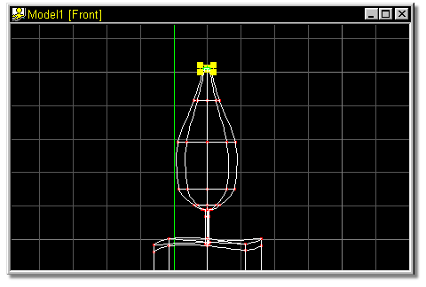
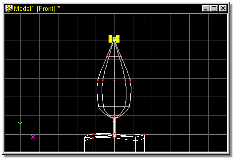

The model after grouping.
Working with the selected points, locate the scale section of your property
panel.
Highlight the top entry by double clicking in the numeric entry box.
Type 1, and press the Tab key.
Press the Tab key again to avoid scaling in the Y axis.
Type 1 one final time, and press the Enter key.
The model window should look similar to figure 47.
